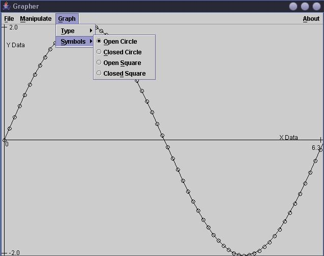

Grapher
Program Description
The grapher is an application that graphs data from a flat-file database. The graph is constructed from inputted
points, and they are represented by filled or empty boxes or circles. The points are then connected by lines,
which can be toggled on and off. Operations can then be done on the graph data, such as adding, subtracting,
normalizing, and dividing.
Features
- Written in Java 1.4.2 Standard Edition
- Demonstrates use of java graphics (Swing)
- Menu-driven GUI
- File input/output
- Utilizing use of check boxes and radio buttons
- Javadocs for Grapher
Sample Run
